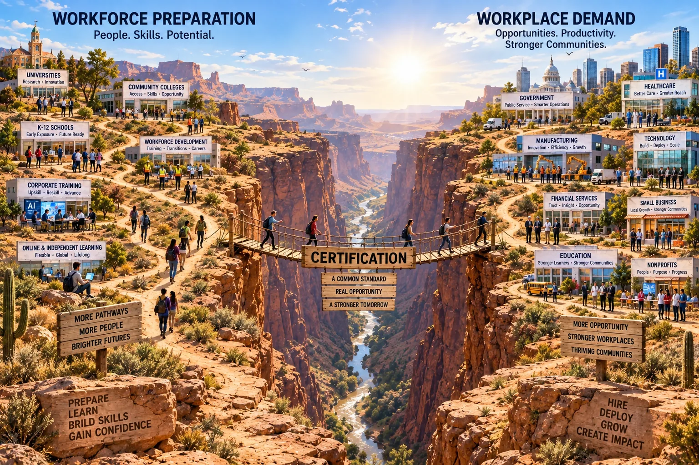

A National AI-Readiness Certification
An invitation to become the third partner.
We’re seeking a partner to help build a national AI-readiness certification designed to accelerate the deployment and hiring of an AI-certified workforce by employers across the country.
An enormous amount of AI training is already underway, and employers increasingly want AI-capable people, but there is no common, trusted bridge connecting the two. RMAIIG and NOCTI are prepared to build that bridge.
There are thousands of employers cautiously excited to hire AI-capable employees to accelerate the productivity of their businesses using AI. “How do I know if they are AI-capable?”
At the same time, there are tens of thousands, if not millions, of people already investing their personal time and money to become AI-ready. This certification validates the result of the potential employee’s investment and reduces the apprehension being held by employers. “How do I demonstrate that I’m prepared to contribute with AI?”
RMAIIG carries forward more than 30 years of technology community-building and today represents an approximately 8,000-person community of AI expertise. NOCTI brings more than 60 years of experience defining, assessing and certifying workforce readiness across hundreds of careers.
Together, they are prepared to build a universal foundational AI-readiness certification—independent of any specific employer, training program, technology company or AI model—that can become a common, trusted workforce standard.
The result of this collaboration can be a nationally deployable certification that gives employers the confidence to begin hiring and deploying AI-certified people more aggressively across occupations—reducing the apprehension that keeps employers from hiring AI-capable people and helping turn AI into a visible engine of workforce opportunity, productivity and jobs.
What unlocks it is a third partner: a $50,000 sponsorship to the nonprofit RMAIIG, deployed to NOCTI for the formal certification-development process and to RMAIIG for its operational contribution.
That sponsorship would make the funder a foundational partner in creating what is intended to become the first universal, nationally available AI-workforce-readiness certification—a landmark credential capable of reaching every community in the country simultaneously.
The partner would be invited into the process alongside RMAIIG and NOCTI, with the opportunity to be historically associated with the creation of a foundational piece of America’s AI workforce infrastructure.
The two brief papers linked below describe both the opportunity and how RMAIIG and NOCTI intend to build the certification. We are open to an individual—or a very small group of select individuals—becoming that third partner.
If this is interesting to you, please let us know and we would welcome an initial conversation to walk through the partnership, the development pathway, and the sponsorship structure and deployment. We greatly appreciate your taking the time to consider the opportunity and review the linked materials.
The two supporting papers
- 1 Accelerating the AI-Ready Workforce The opportunity. How a Universal AI Certification Bridges Workforce Preparation and Workplace Demand.
- 2 Building the AI-Readiness Bridge How they build it. How RMAIIG and NOCTI Combine Their Expertise to Build a Foundational AI Workforce Certification.